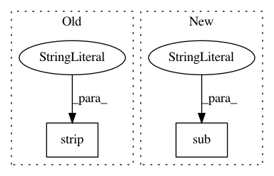

8add320a0a507a4118f140e0fd45811a87ab8dc1,ggplot/aes.py,,strip_dots,#Any#,114
Before Change
def strip_dots(ae):
with suppress(AttributeError):
ae = ae.strip("..")
return ae
def aes_to_scale(var):
After Change
Aesthetic value with the dots removed.
with suppress(TypeError):
value = CALCULATED_RE.sub(r"\1", value)
return value
def aes_to_scale(var):
In pattern: SUPERPATTERN
Frequency: 3
Non-data size: 2
Instances
Project Name: has2k1/plotnine
Commit Name: 8add320a0a507a4118f140e0fd45811a87ab8dc1
Time: 2016-07-16
Author: has2k1@gmail.com
File Name: ggplot/aes.py
Class Name:
Method Name: strip_dots
Project Name: nltk/nltk
Commit Name: 5e233859c5fef3c6c5059fe0f8e201b9f67b4e67
Time: 2019-05-07
Author: alvations@gmail.com
File Name: nltk/corpus/reader/wordnet.py
Class Name: WordNetCorpusReader
Method Name: _synset_from_pos_and_line
Project Name: mynlp/ccg2lambda
Commit Name: f91c6aaadfed8c6dc7ee58f459c4aa369fcba882
Time: 2017-01-12
Author: pascual@nii.ac.jp
File Name: scripts/abduction_tools.py
Class Name:
Method Name: GetPremisesThatMatchConclusionArgs